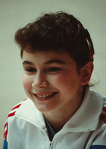

Maria Neculita (ROM)

Medal Total
Olympic Games: 1
Silver
World Championships: 1 Silver, 2
Bronze
European Championships: 1
Bronze
Maria was born on March 31, 1974.
Competition Results
1986
Jr. Balkan Championships: 1st Team, 3rd AA, 5th UB, 5th B
Jr. Romanian Championships: 1st AA, 1st FX, 2nd V, 2nd UB (Cat. III)
Romanian Sports Schools Championships: 2nd AA (Cat. III)
1987
Jr. Balkan Championships: 3rd AA
Jr. GDR-ROM Dual Meet: 1st Team, 1st UB, 1st B
1988
Jr. Balkan Championships: 1st AA
Jr. ROM-URS-GDR Meet: 3rd AA, 2nd UB, 3rd B
Jr. Romanian Championships: 2nd AA, 1st FX
Moscow News: 6th AA, 3rd FX, 6th UB, 7th V
1989
Cottbus: 2nd AA
ROM-CSSR Dual Meet: 1st Team, 2nd AA
1990
Athens International: 7th AA, 2nd V
Catania Cup: 3rd V, 4th UB
Cottbus: 15th AA
Dutch Open: 2nd AA, 1st V, 1st B
European Championships: 6th AA, 3rd B, 5th FX
Gander Memorial: 6th AA
Intl. Championships of Romania: 1st AA
Swiss Cup: 9th AA
1991
BEL-FRA-ROM-USSR: 5th AA
Dutch Open: 3rd AA
GER-ROM Dual Meet: 1st Team, 6th AA
Intl. Championships of Romania: 2nd AA
USA-ROM Dual Meet: 10th AA
World Championships: 3rd Team
World Sports Fair: 3rd AA, 2nd FX, 3rd V, 3rd B
1992
Balkan Championships: 1st AA, 1st B, 2nd FX
FRA-ROM Dual Meet: 1st Team, 4th AA
GER-ROM Dual Meet: 1st Team, 2nd AA
HUN-ROM Dual Meet: 1st Team, 4th AA
Intl. Championships of Romania: 1st AA, 1st FX
ITA-ROM-CIS: 4th AA
Olympics: 2nd Team
South African Cup: 1st AA
Trophy de Marseille: 1st AA, 1st B, 1st FX
World Championships: 2nd B, 3rd FX
This page was created on November
22, 2001 and was last updated on September 05, 2022.
© Gymn Forum